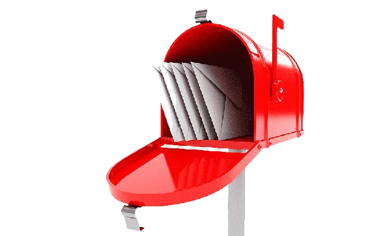

Una notificación de impuestos es un documento oficial que una autoridad tributaria (como el Servicio de Impuestos Internos o Hacienda) envía a un contribuyente para comunicarle un hecho relacionado con sus obligaciones fiscales.
¿QUÉ ES LA NOTIFICACIÓN?
Una notificación de impuestos es un documento oficial que una autoridad tributaria (como el Servicio de Impuestos Internos o Hacienda) envía a un contribuyente para comunicarle un hecho relacionado con sus obligaciones fiscales.
Formas de Notificación
La elección del medio de notificación depende del SIN, aunque debido a la tecnología la notificación por el Buzón Tributario es el que usan con mayor frecuencia
¿Hay multas asociadas a la orden de fiscalización o verificación?